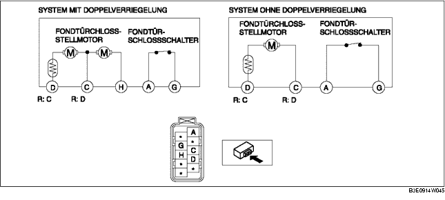

1. Der folgende Stellmotor und Schalter sind in das Fondtürschloss und den Türschloss-Stellmotor integriert. Beim Fondtürschloss und dem Türschloss-Stellmotor entsprechend des jeweiligen Prüfverfahrens die folgenden Punkte prüfen.
